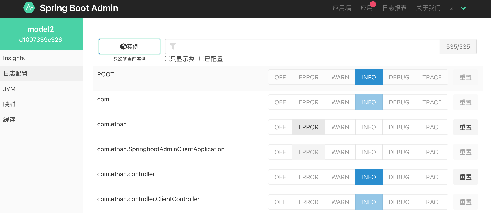

SpringbootAdmin动态监控系统与修改日志等级
SpringbootAdmin类似于Eureka，服务端和客户端需要我们自己编写代码配置。
1. SpringBootAdmin服务端配置：
1. pom.xml：<dependency> <groupId>org.springframework.boot</groupId> <artifactId>spring-boot-starter-web</artifactId> </dependency> //父工程SpringBoot版本2.2.1.RELEASE <dependency> <groupId>de.codecentric</groupId> <artifactId>spring-boot-admin-starter-server</artifactId> <version>2.2.1</version> </dependency>2. application.properties:
server.port=8081 spring.application.name=model13. Application添加注解：@EnableAdminServer
package com.ethan;
import de.codecentric.boot.admin.server.config.EnableAdminServer;
import org.springframework.boot.SpringApplication;
import org.springframework.boot.autoconfigure.SpringBootApplication;
//服务端
@SpringBootApplication
@EnableAdminServer
public class springbootadminApplication {
public static void main(String[] args) {
SpringApplication.run(springbootadminApplication.class, args);
}
}
4. 启动程序有直接访问localhost:8081就会来到SpringBootAdimn后台管理页面
2. 客户端配置：
1. pom.xml:<dependencies> <dependency> <groupId>org.springframework.boot</groupId> <artifactId>spring-boot-starter-web</artifactId> </dependency> <dependency> <groupId>de.codecentric</groupId> <artifactId>spring-boot-admin-starter-client</artifactId> <version>2.1.1</version> </dependency> <dependency> <groupId>org.springframework.boot</groupId> <artifactId>spring-boot-starter-security</artifactId> </dependency> <dependency> <groupId>org.projectlombok</groupId> <artifactId>lombok</artifactId> <version>1.18.12</version> </dependency> </dependencies>2. application.properties中注册到Server:
server.port=8082 spring.application.name=model2 #客户端连接服务端 spring.boot.admin.client.url=http://localhost:80813. 在Server端应用实例配置对应的日志等级： 